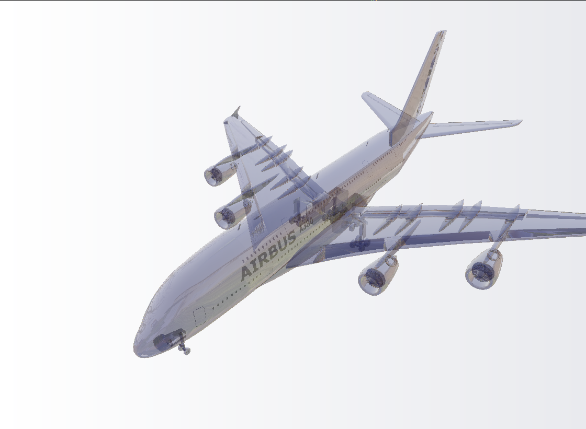
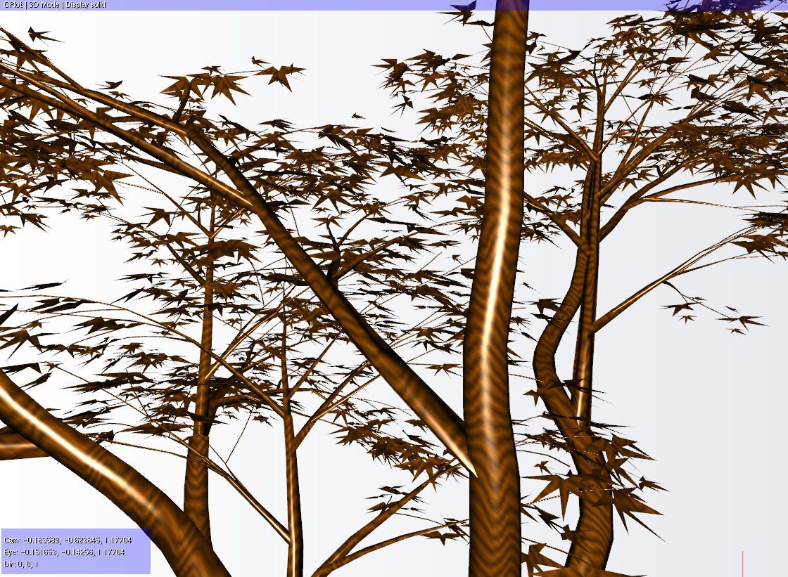
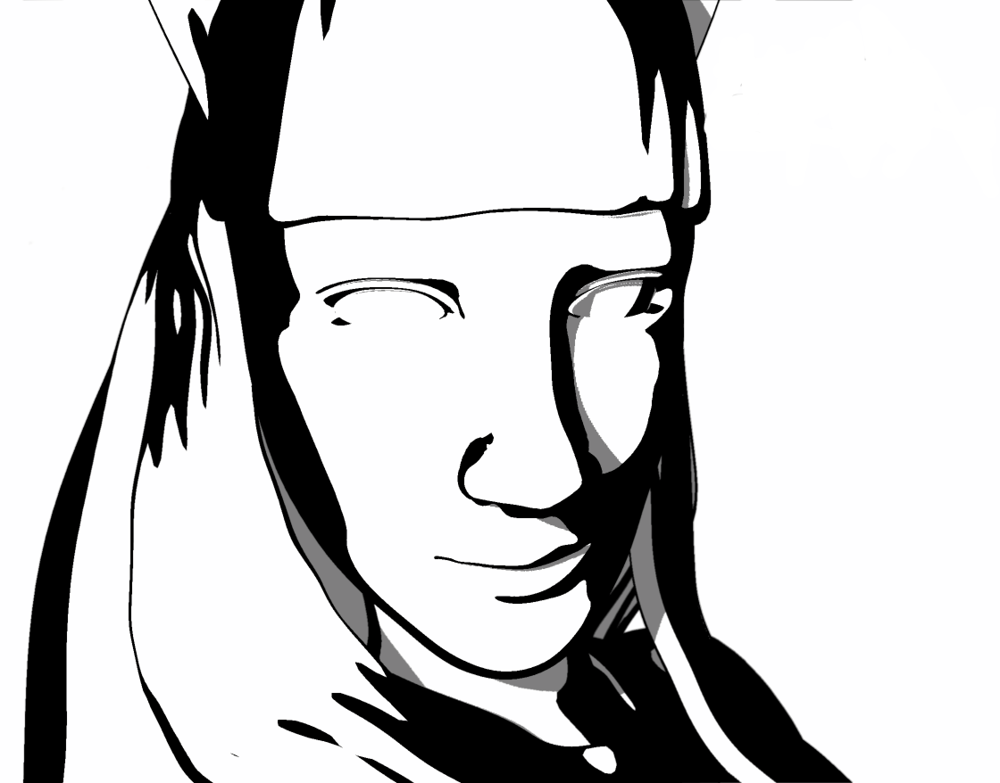
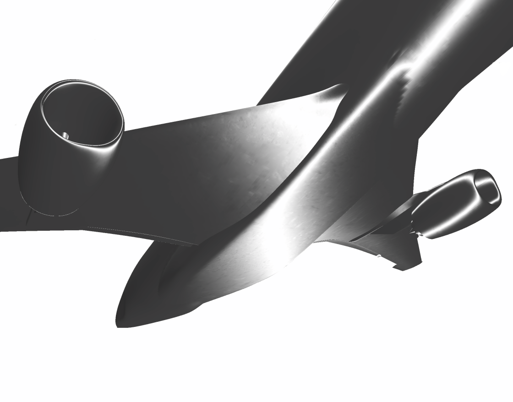
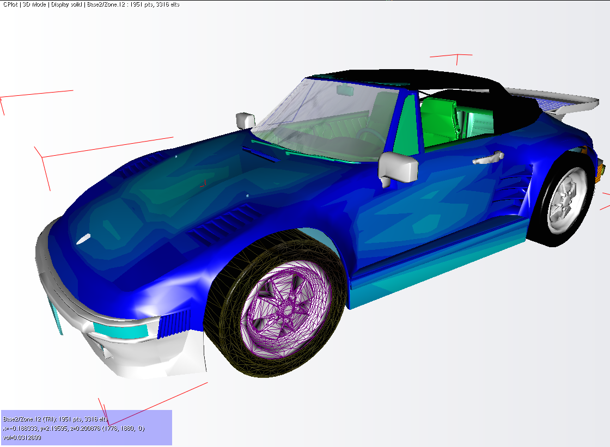
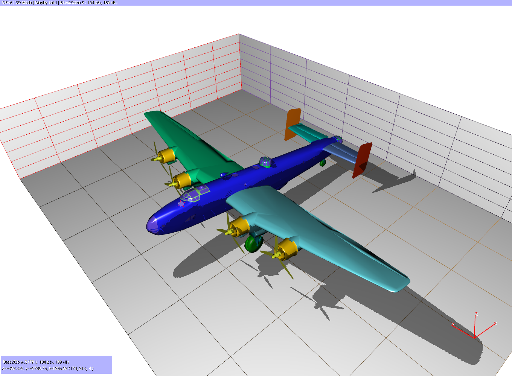
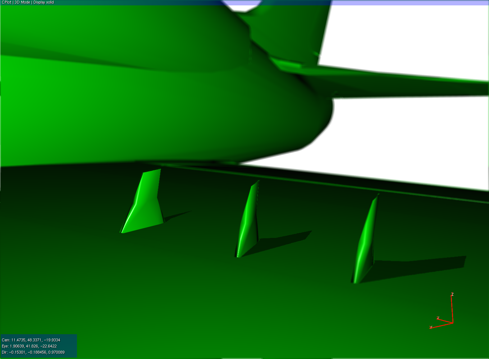
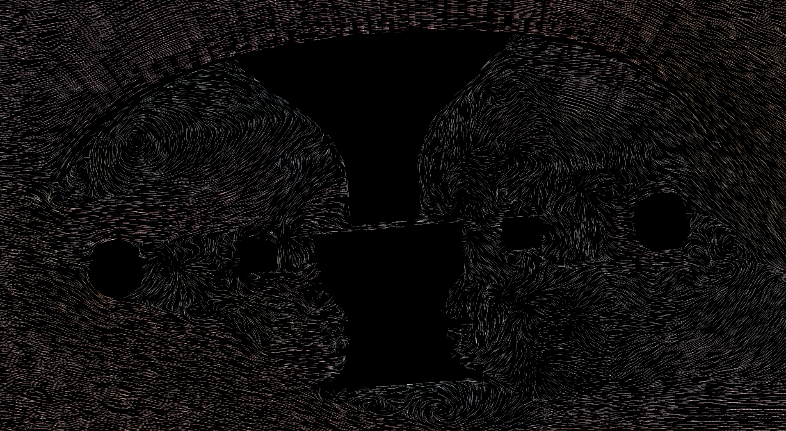
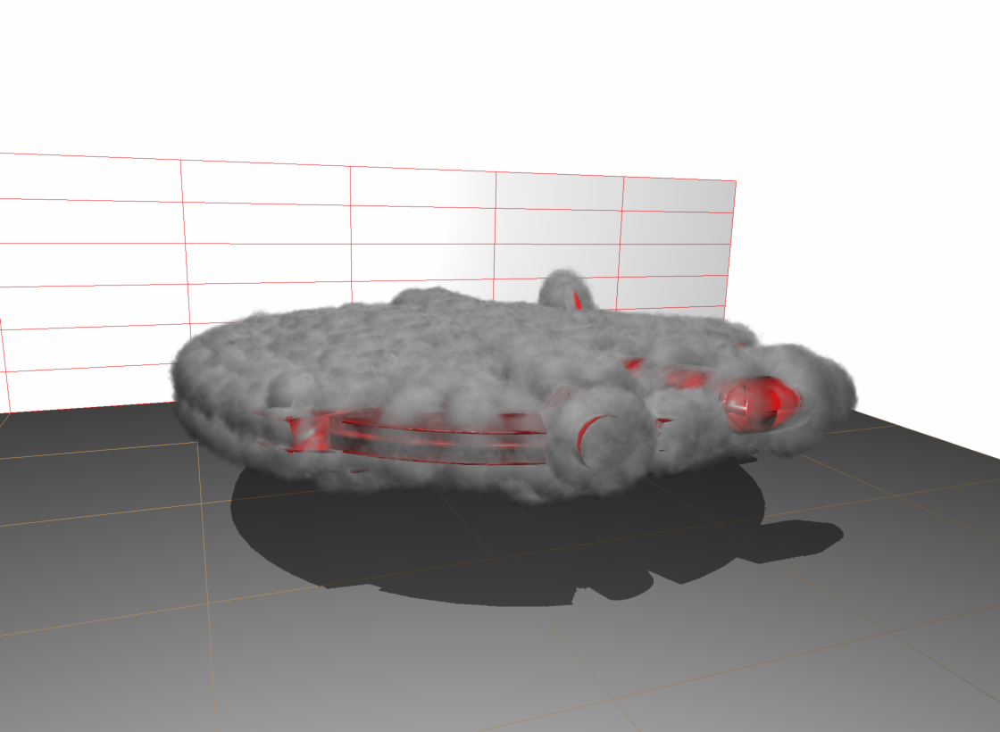

model rendered with Multicolor/outlined (Solid mode).

Airbus model rendered with blending shader (Render mode).

Maple tree model rendered with Wood shader (Render mode).


Skeleton model rendered with XRay shader (Render mode).

T-Rex model rendered with Glass shader (Render mode).

Statue model rendered with Chrome shader (Render mode).

Statue model rendered with Granite shader (Render mode).

Statue model rendered with Marble shader (Render mode).

Statue model rendered with Gooch shader (Render mode).

Goshawk and atibus model rendered with Metal shader (Render mode).

Porsche model rendered with different shaders (Render mode).

Halifax airplane rendered with shadow activated (tkEffects).

Depth of field (DOF) shader for a detail on the wing (tkEffect).

Iso-bands shader for stall wing profile (Scalar mode).

Iso-lines shader for a high-lift profile.

Rotor hub slice rendered with vector lines shader (Vector mode).

Rotor hub slice rendered with uniform vector lines shader (Vector mode).

Taylor vortex slice rendered with arrow shader (Vector mode).

Smoke rendering using billboards.